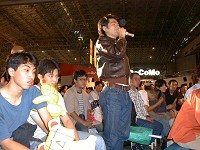

9月17〜19日（17日はビジネスデー）に幕張メッセで開催された「東京ゲームショウ'99秋」は、最新テクノロジーの描き出す夢の世界を一堂に集め、数多くのゲームファンやご家族連れのご来場をいただいて、大盛況のうちに会期を終了しました。
この日の来場者数は、前日をはるかに上まわる8万1933人。そして会期3日間の来場者数は16万3866人と前回を上回り、6回連続の動員記録更新を果たしました。
またも記録更新、16万3866人が来場
最終日の19日は、前日の一般公開初日よりもさらに多くのファンが会場に集結。3万5000人もの熱心なゲームファンが開場を待ちました。
このためイベント事務局は前日に引き続き、19日も開場時間を30分繰り上げて、来場者の熱意にこたえました。
開場の瞬間、キッズコーナー入場ゲート
イベントステージでは10時30分から、好評のイベント『危険なクリエイター・トークバトル 次世代ハードの秘密を探る』が開催されました。
株式会社メディアワークス 塚田正晃 電撃統括編集長とタレント穴井夕子さんの司会のもとに登場したのは、岡本吉起氏（カプコン）、中里英一郎氏（E.A.スクウェア）、川村順一氏（ナムコ）という、3人のキーマン。会場をぎっしりと埋めたファンからの質問に答えながら、新ハードが可能とするリアルな表現や多彩な操作法などの魅力を熱く語りました。
また出演者の何人かは、イベント終了後も会場近くでファンと交歓する姿が見られるなど、今回に限っては「危険さ」よりもあたたかみが印象に残った「トークバトル」でした。

会場からは、鋭い質問が続々と
|

いつになく（？）なごやかなムードのステージ上
|
小学生以下のお子様連れを対象とした「キッズコーナー」には、10社が出展。入場者数は2日間で1万9366人を数えました。ゲームの試遊コーナーの他にもファミリーのための休憩所や各社の楽しいショウが行われるステージが設けられ、ご家族連れが安心してゆったりと楽しめるスペースとして、すっかりおなじみになりました。
またこちらもおなじみの「PCコーナー」には、加速的なグラフィック性能の向上を生かした意欲作が集結。PCならではの壮大なシミュレーションやフライトシミュレータ、アクション、ガンシューティングなどのコンシューマ機に負けない軽快な動きが印象的でした。
そして、相変わらずの大人気を誇ったのが「物販コーナー」。イベント限定や先行発売のゲーム関連アイテムが、多くのファンを集めました。ディスカウントや「福袋」セールを行うブースも目立つなど、この一帯はまるで「縁日」のようなにぎわいを見せました。

キャラクターぬり絵コーナーの子どもたち
|
最新PCゲームに熱い視線
|
そして9月19日（日）17時、「東京ゲームショウ'99秋」は、空前の盛況のうちに3日間の会期を終了しました。
「東京ゲームショウ'99秋」のメインテーマは『Coming Surprise〜スゴイは、ここから』。次の千年紀を目前に、コンピュータエンターテインメントソフトウェアの新しい未来を、東京ゲームショウから全世界に向って発信していく意志を込めたものです。斬新なソフトと新ハードが出展され、また前回に引き続き海外からの出展社を迎えたことにより、ゲームの「新しいステージ」の姿が多くの来場者に予見されたことでしょう。
またこの秋、東京ゲームショウが新たにコンセプトとしてかかげた言葉は「Network & Communication」。インターネットや携帯電話、デジタル衛星テレビなどの通信インフラが整いつつある中で、コンピュータエンターテインメントにおいても、コミュニケーションの楽しさ、面白さを追求する流れが台頭しています。くらしの中のさまざまなシーンに「ゲームの楽しさ」を提供していくこと、これも「新しいステージ」のひとつです。
情報とコミュニケーションを遊ぶ子どもたち。未来はすぐそこに……
では次回の東京ゲームショウで再びお会いする日を、心よりお待ちしております。